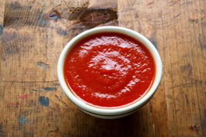

Kráľ Henry VIII spal s gigantickou sekerou vedľa postele
Ovca, kačka a kohút boli prvými pasažiermi v horkovzdušnom balóne
Piráti nosili náušnice lebo si mysleli že im to vylieči zlý zrak a morské choroby
Prvý budík zvonil len o 4. ráno

Kečup bol používaný v medicíne na začiatku 19. storočia
Mať družičky na svadbe bolo originálne na zmätenie zlých duší ktoré chceli ublížiť neveste
V roku 1386 bolo vo Francúzsku obesené prasa kvôli zavraždeniu dieťaťa
Najstaršia žuvačka má 9 000 rokov
Počas Druhej svetovej sa o väzňov v Kanadských vojnových táboroch starali tak dobre, že nechceli po vojne odísť
Zapalovač bol vynájdený skôr ako zápalky